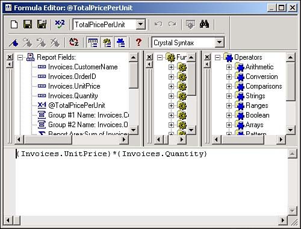
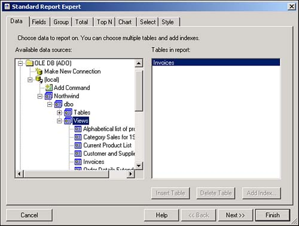

Although creating reports based on given fields in tables is fine, it just does not give the flexibility I need. To have that, I need to know how to add calculated fields to my reports.
In Crystal Reports, calculated fields are known as formulas. To create and edit formulas, you will use the Formula Editor (see Figure 10.16).

When you're in the Report Expert, you can add a new formula by clicking on the Formula button, located on the Fields tab.
In Report design, you can add a field by opening the Field Explorer, located to the left of the IDE with the toolbox, and expanding the Formula Fields tree. You can also right-click on the Formula Fields base node and choose New to add a new formula.
Formulas are similar to T-SQL expressions in that you can combine fields or values with operators to create a Formula field. For example, a formula called @TotalPricePerUnit is being created for this How-To. You saw it displayed in Figure 10.16. The expression used is this:
{Invoices.UnitPrice}*{Invoices.Quantity}
You can use Formula fields in summary sections and grand totals. The best way to verify a formula is to create it when you use the Report Expert to create a report.
Open the Visual Basic .NET-Chapter 10 solution. In the Solution Explorer, you will see the report rptHowTo10_3.rpt. Scroll over to the left so that the last column is visible. This is the Formula field.
Right-click on your project in the Solution Explorer and choose Add New Item from the Add menu item. Type the name of the report in the Name field and click Open. The Crystal Report Gallery dialog box opens.
Leaving the defaults as they are, which is to use the Report Export and create a Standard report, click the OK button. You are taken to the Report Expert, with the Data tab displayed.
Double-click on the OLE DB (ADO) node in the Available Data Sources tree. If you haven't chosen a data source before, the OLE DB (ADO) dialog box opens asking you to choose an OLE DB provider. Choose Microsoft OLE DB Data Provider for SQL Server and click Next.
You are requested to enter connection information. For this page, type (local) for the server, check Integrated Security, and type Northwind for the database. Click Finish. Your Available Data Sources will now indicate (Local) under the OLE DB (ADO) node and Northwind under the local connection.
Expand the tree under Northwind to get to the first DBO, and then expand Views. You will see the views listed, including the Invoices view. Highlight the Invoices view and click Insert Table. The view is displayed in the Tables in Report list (see Figure 10.17). Click Next.

From the Fields tab, add the following fields: Invoices.CustomerName, Invoices.OrderID, Invoices.UnitPrice, and Invoices.Quantity.
Click on the Formula button. Type TotalPricePerUnit. Crystal Reports puts the @ before the formula name from now on. You are then brought into the Formula Editor, shown back on Figure 10.16.
Type the formula {Invoices.UnitPrice}*{Invoices.Quantity}; then press Ctrl+S to save and close the dialog box. An alternative is to double-click on the fields you want to include.
Now select the formula you just created, and add it to the fields to include.
You can now go on to select how you want the columns totaled and what you want the style of the report to be. Click Finish when you are done.
The Formula Editor works similarly to other builders, and it's pretty straightforward to use. Formulas are another step to making sure you can give your clients the full-featured reports they want.